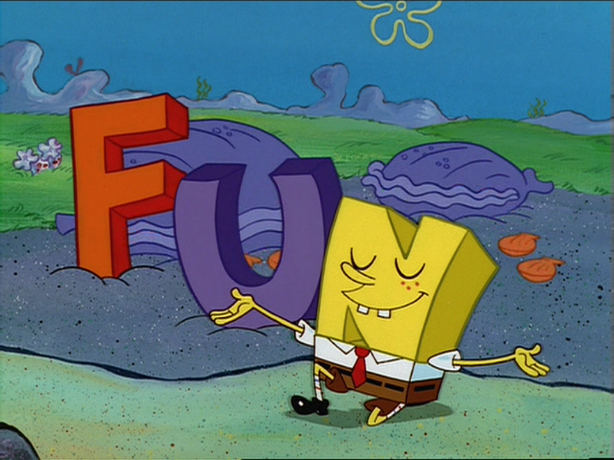

Maps for FuN
Updated: 2018-12-26

1. Introduction
Nowadays maps and other kinds of geospatial visualizations are in every nook and cranny. It seems everybody loves geoviz, but why?. Probably, there may be a lot of good reasons for it, but in the simplest ways is we can read and comprehend them effortlessly.
What happends if I show you a weird map? (Cartogram, see bellow). I am utterly sure you will explain with success the essence of the map, even if you have no idea about what is a cartogram. This leads to idea that all of us have a kind of exceptional condition innate for a spatial-oriented way of thinking. Therefore, as a data communicator all the techniques of geospatial visualization data must be in your arsenal if you want to give a good impression.
library(rnaturalearth)
library(hrbrthemes)
library(tidyverse)
library(gganimate)
library(cartogram)
library(sf)
# Get a sf object of worldwide from Natural Earth Data
worldmap <- ne_download(scale = 110,
type = "countries",
category = "cultural",
destdir = tempdir(),
load = TRUE,
returnclass = "sf")
# Filter by CONTINENT column to get South-America
# geometry
worldmap_pop <- worldmap %>%
filter(CONTINENT =='South America') %>%
select('POP_EST') %>% # country population
'colnames<-'(c('pop','geometry')) %>%
mutate(pop = as.numeric(pop)/1000000) %>%
as('Spatial') # sf to sp
# Create cartogram of country population.
cart_worldmap_pop <- cartogram_cont(worldmap_pop,'pop')
worldmap_pop$group = 0 # geometries of the simple map
cart_worldmap_pop$group = 1 # geometries of the cartogram.
# Bind both in a single sf object
anim_world <- rbind(worldmap_pop,
cart_worldmap_pop) %>%
st_as_sf()
# Build 100 maps (frames) using cubic spline and
# compile them in a unique file (*.gif).
p <- ggplot(st_as_sf(anim_world)) +
geom_sf(aes(fill = pop), alpha=1) +
coord_sf(crs = st_crs(anim_world), datum = NA) + #elimina x and y axis text.
scale_fill_viridis_c( # Compose a palette using
trans='sqrt',
name="Population (M)",
breaks=c(1,50,100, 200),
guide = guide_legend( keyheight = unit(3, units = "mm"),
keywidth=unit(8, units = "mm"),
label.position = "bottom",
title.position = 'top',
nrow=1)) +
labs(title = "South America Population",
subtitle = 'Natural Earth Data',
x=NULL,
y=NULL) +
theme_modern_rc(plot_title_size = 20,
axis = FALSE,
base_size = 16) + # my favorite theme!
theme(legend.position = c(0.8, 0.04),
axis.text = element_blank(),
panel.grid.minor = element_blank(),
panel.grid.major = element_blank()) +
transition_states(group,2,1) + # gganimate is just magical!
ease_aes('cubic-in-out')
anim <- animate(p,duration = 4) # Create a gif file
# anim_save('population.gif',anim) #save your gif
2. The Course
Maps for fun is a gentle introduction for learning to make maps with high impact using R and RStudio mainly. There are a lot of good reasons for prefer R instead other languages or platforms:
- The R community.
- ggplot2 + sf == perfect match .
- Open-source (free) software.
- A huge amount of new packages (2018) (crosstalk, r2d3, furrr, reticulate, etc.), all of them count with a cohesive narrative that helps you to get in-depth knowledge quickly.
- R is easy lo learn.
- R is cross-platform.
- etc.
Although no prior programming knowledge is required, it is recommended. All the geoviz presented in this course are reproducible so you only need to install the libraries specified on the setup section. By the end of this course participants will have a good understading about the principle geospatial vizualization techniques, manipulate tables for get a static and dynamic map, create annimations, etc.
3. Contained
- Choropleth maps in plotly.
- Creating Heat maps.
- dot and lines on maps.
- Creating Hexagonal binning.
- Cluster maps
- Creating Cartograms.
- Geospatial animations with plotly.
- Geospatial animations with gganimate.
- Web maps with Leaflet.
- Widget interactions with Crosstalk.
- Interactive Mapping with Shiny.
- Tips for 3D Surface Representations.
- Flexdashboards for Spatial data communication.